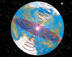
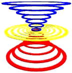
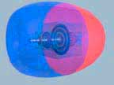
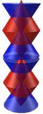

|

PLANETARY
VORTEX
For larger view and
information
CLICK
HERE
(animation
optional)

VORTEX
For larger view and
information
CLICK
HERE
(animation
optional)

MAGNET
For larger graphic
and information
CLICK
HERE

SPACE
GEOMETRY
For larger graphic
and information
CLICK
HERE
|
|
VORTEX
MECHANIK - Was ist
das?
Haben sie jemals
Strudeln im Wasser ( in Fluessen, Baechen oder auch
nur in der Badewanne) beobachtet ? Oder auch
Wirbeln in der Luft, durch starke Winde oder auch
Wirbelstuerme? Haben sie gewusst, dass der
Stromfluss in einer elektrischen Leitung aus sich
selbst vorwaertsbewegenden Wirbeln besteht, welche
so ein magnetisches Feld um den Draht herum
erzeugen. Dasselbe gilt natuerlich auch fuer unsere
Atmosphaere , wo Wirbeln (Vortices) als
Longitudinal oder Skalar Wellen existieren, welche
z.B. fuer Kommunikation, auch dem Internet,
genuetzt werden kann. Stellen sie sich vor
: Keine diagonale Hertz Uebermittlung mehr,
mit seiner beschraenkten Bandbreite. Die
Kommunikations Moeglichkeiten sind unbeschraenkt,
sie schliessen sogar unmittelbare
Gedankenuebertragung mit ein. VORTEX
MECHANIK erstreckt sich auch auf andere, nicht
sichtbare Dimensionen, und wir werden erklaeren,
wie diese Wirbel anwendbar sind. Wenn man sie
in einer, entsprechend ihren Gesetzen
fertiggestellten Maschine anwendet, liefert diese
praktisch unbeschraenkte Energie, welche faktisch
ueberall eingesetzt werden kann. Die
Wirbelbewegung ist das Arbeitspferd des Universums.
Es ist das Werkzeug, welches die Natur benuetzt um
seine Kreationen zu bauen und wieder auseinander zu
nehmen. Wieso wissen wir darum? Seit ueber zwanzig
Jahren haben wir verschiedenste Technologien
basierend auf den Prinzipien der VORTEX
MECHANIK entwickelt, und immer, wenn wir
einen neuen Prototyp konstruiert haben, hatten wir
eine neue Einsicht, eine neue Erfahrung - und genau
diese wollen wir mit unseren Lesern teilen.
Kristalle ,Pflanzen, unser Koerper, alles beruht
auf denselben Prinzipien. Der Leser wird
diese wunderbaren Prinzipien kennenlernen und
selbst imstande sein zu beobachten, zu entdecken
und zu kreieren.
ANGEWANDTE VORTEX
MECHANIK kann eine neue Technologie
entwickeln, die nicht auf Mangel und Zerstoerung
basiert. Wir benoetigen eine neue Basis fuer diese
unsere Zivilisation. Unsere Erde wird ihre eigene
Zerstoerung nicht endlos dulden . Das Verstaendnis
und die Anwendung von angewandter Vortex
Mechanik wird eine Revolution nicht nur in
Wissenschaft und Technologie bringen, sie wird auch
uns Menschen grundlegend veraendern.
TOP
VERSTAENDNIS
DES SICHTBAREN
UNIVERSUMS
Zusammen mit der
praktischen Anwendung des Wirbels werden wir uns
auch das sichtbare Universum ansehen. Wir werden
lernen den universalen Hintergrund der Natur zu
verstehen. In allen Zivilisationen bevor hat es
dieses Wissen auf unserem Planeten gegeben, sorgsam
geschuetzt und behuetet von Priestern und
Schamanen. Aber nie war es so vollstaendig und
ganzheitlich, wie wir es jetzt praesentieren
koennen.
Wir stellen die
wirkliche Geschichte des "Hintergrundes", auch
Transzendenz genannt vor. Es gibt tatsaechlich ein
unsichtbares Universum. Und dieses unsichtbare
Universum regelt das Sichtbare. Es ist
verantwortlich fuer alles Leben, fuer die gesamte
Schoepfung. Dem Leser wird ermoeglicht die genaue
Mechanik, welche hinter allen schoepferischen
Prozessen in diesem Universum steht, zu verstehen.
Wir werden demonstrieren, in welchen geometrischen
Strukturen sich Schoepfung (Stein, Pflanze, Wasser
bis zu ganzen Galaxien) kreiert und organisiert.
Die Mechanik der Welle, der Kristallisation und des
Wachstums. Was ist hinter diesem
elektromagnetischen Universum? Wie passiert
Levitation und Gravitation in der Natur? Wir
werden diese Fragen beantworten.
Die Geometrie des
Hintergrundes (der Transzendez), das Erkennen ihres
Funktionsmechanismuses, lehrt uns, wie die Natur
ihre Kreationen manifestiert. Kreation ist
allererst ein Denkprozess, ob in der Natur oder
beim Menschen. Die Denkprozesse der Natur koennen
erkannt und verstanden werden. Sie koennen auch bis
ins Detail nachgeahmt und genutzt werden . Wir
haben Vorstellungs- und Schoepfungskraft
- wir koennen konstruktiv mitgestalten an
diesem unseren Planeten und unserem
Universum.
TOP
WIE
DIE NATUR IHRE WERKZEUGE
BENUTZT
Der Leser wird das
wesentliche und hauptsaechliche Werkzeug der Natur
kennenlernen - den Vortex (= Wirbel, Strudel,
Bewegung in Spiralen). Kann sich jemand etwas
aufregenderes vorstellen als die Ursache alles
Lebens kennen zu lernen ? Es ist die Vortex -
Bewegung, die erschafft, durchdringt, gestaltet,
formt und kontrolliert.
Jede lebende
Kreatur, die sich aus seiner archetypischen Idee
heraus in das sichtbare Universum gebiert , geht
durch eine spiralenfoermigen Bewegung um sich zu
manifestieren. Warum ist das Arbeitspferd der
Natur, die Vortex Formation, die wirbel- oder
spiralfoermige Bewegung solange nicht beachtet
worden?
BEWEGUNG
IST ALLES
Der Vortex ist die
Bruecke zwischen dem Sichtbaren und dem
Unsichtbaren. Es ist jene Form der Bewegung,
die beschleunigt, Energien ansammelt und diese
Energien zu Materie verwebt und , die gemaess
dem Bauplan ihrer Matrize, sich vom
unsichtbaren ins sichtbare Universum
kristallisiert.
Vortex formt
Materie, gestaltet sie und haelt sie
zusammen. Die Vortex leitet Lebensprozesse
dadurch, dass sie zentripetal Wachstum
auflaedt und naehrt und dann zentrifugal
wieder entlaedt und alles zurueckwirft in den
Stillstand oder Tod. Wir geben der
zentripedalen und der zentrifugalen Bewegung
groeszte Bedeutung.
TOP
MASCHINENKONSTRUKTION
BASIEREND AUF NATUERLICHEN
PRINZIPIEN
In den folgenden
Ausgaben unserer Website- Zeitschrift werden sie
viele praktische Anwendungen verschiedenster
Aspekte der Vortex erfahren und auch, wie man deren
Eigenschaften benuetzen kann. Der Leser wird
erkennen, wie er an den universalen Prinzipien
teilhaben kann und, wie er dieselben benuetzen
kann, praktische, physische Maschinen und Geraete
selbst zu entwickeln. Wir werden in unserer Website
- Zeitschrift zeigen und demonstrieren wie man
gewuenschte Effekte erzielen kann, entweder mit
bereits existierenden Modellen oder mit
anschaulichen Bauplaenen. Die Entdeckung der
Grundlagen der natuerlichen Ursachen wird dem
Leser ein Wissen und ein praktisches Verstaendnis
einer vollstaendig neuen Technologie eroeffnen ,
einer Technologie, wie wir sie uns bisher nicht
vorstellen konnten. Wir werden auch Anleitungen zum
Geraetebau geben, fuer alle, die sich dafuer
interessieren.
TOP
NUTZUNG
DER TORNADOKRAFT
Diese neue
nicht-zerstoererische Technologie kann auf allen
Gebieten des Lebens angewandt werden. Die
gegenwaertige Technologie ist beides:
zerstoererisch und verschwenderisch.
Kernenergie, Luftverschmutzung, Wasser- und
Erdvergiftung, Erdoelverschwendung, chemikalische
Nahrungs-mittelvergiftung, und vieles andere mehr,
sind nur wenige Beispiele. All dies fuegt der Natur
Schaden zu, biologische Systeme drohen zusammen zu
brechen und wir alle leiden unter den
Folgeerscheinungen, die immer alarmierender werden.
Wir konzentrieren uns auf folgende
Loesungsvorschlaege: Eine neue Energie-quelle, neue
Generatoren und ein neues Transportsystem fuer
Wasser, Luft und Land. Solche Systeme sind nur dann
moeglich, wenn wir zentripetale Bewegung anwenden
oder Implosion. Viele Tiere in der Natur
benutzen dieses Antriebssystem. Der
Fisch -und der Implosionsmotor werden im Detail
erlaeutert werden. Wir zeigen die vergangenen und
zukuenftigen Forschungsschritte. Wir werden
aufzeigen, dass die Vortex Bewegung die einzige
Bewegung ist, mit der die Natur ihre Effekte
erzielt - Voegel, Insekten, Meerestiere werden uns
als Beispiele dienen. Wir werden die Ursachen
natuerlicher Antriebssysteme anschaulich machen
und wir werden erklaeren , wie man diese
Grundprinzipien im Maschinen- und Geraetebau
anwenden kann.
Die gegenwaertige
Wissenschaft und Technologie beschaeftigt sich nur
mit Explosion, Kernspaltung, zentrifugaler Bewegung
und exothermischen Reakionen - Natur, im Gegensatz
dazu, benuetzt Implosion, zentripedale Bewegung und
endothermische Prinzipien.
TOP
WASSER
UND ABFALLBEHANDLUNG DURCH
DEN VORTEX
Forschung und
Entwicklung in der Vortex Mechanik hat
revolutionaer neue Methoden und Geraete
hervorgebracht , welche fuer Recyling und
umweltfreundlicher, kostenguenstiger
Abfallbehandlung angewendet werden kann. Diese
Methode reduziert dramatisch den Energieaufwand,
reduziert umweltschaedliche Abfallprodukte und
minimiert Kosten fuer Behandlung und
Aufbewahrung.
IN
JEDEN VON UNS IST EIN
GENIE VERSTECKT
Unsere Website
- Zeitschrift zielt auf Menschen in
allen Lebensbereichen hin, nicht nur auf Techniker.
Wenn man die inneren Bewegungen der Natur erfassen
will, benoetigt es reine Beobachtung, ohne inneren
Dialog, ohne
Ueberlagerung von Sinneseindruecken. Wir werden die
Mechanismen des Geistes darlegen, sodass es dem
Leser dann moeglich sein wird korrekt zu beobachten
und dadurch die eigene intuitive Wahrnehmung zu
vergroessern und das Bewusstsein zu erhoehen. In
jeder Frau und jedem Mann ist ein Genie
versteckt. Jeder traegt Wissen in sich, es
geht nur darum dieses auch zu erwecken. Diese
unsere Faehigkeit korrekt zu beobachten, verbunden
mit dem Wunsch zu wissen, oeffnet das Tor zum
Bewusstsein der wundersamen Prozesse und
Bewegungen, welche die Natur fuer uns bereithaelt
und, welche sie selbst benuetzt.
TOP
EINE
EINLADUNG
Wir laden
Techniker, Umweltschuetzer, Ingenieure, Artisten,
Designer, Architekten, Erfinder, Unternehmer,
Manager, Investoren ein! Alle, die daran
interessiert sind unser oekologisches System zu
erhalten und alle, die in ihrem Gebiet mehr kreativ
sein wollen. Wir nehmen die kreative Seite der
Natur ein und zusammen mit seiner Intuition kann
der Leser in seinem Fachgebiet neu entdecken und
kreativ gestalten.
Informieren Sie
sich ueber die zentripedale, zusammenfuegende,
implodierende, wachsende ,konstruktive Seite der
Natur, welche den Planeten vor der Zerstoerung
retten kann. Wir haben Problemloesungen : Wir
erkennen und entschluesseln die grundsaetzlichen
Ursachen innerhalb des unsichtbaren Universums -
davon ausgehend haben wir eine Innenschau in jene
Manifestation, welche unsere alltaegliche
physikalische Welt funktionieren laesst Wir werden
die bereits existierenden Probleme nicht mit
konventionellen technischen Methoden
ueberlagern.
TOP
ZUR
ERINNERUNG
Alles kommt von
derselben Quelle. Diese urspruengliche Ursache oder
Quelle, das unsichtbare Universum, der Urgrund des
Geistes, die grosse Leere oder wie wir es auch
immer benennen wollen, alles folgt einem ganz
spezifischen Pfad, einem Prozess, einer Mechanik
aus dem heraus sich unser physisches Universum
gestaltet und auch wieder aufloest.
Wenn wir die
Ursache wissen und erkennen, dann koennen wir die
Myraden der Verschiedenheiten unserer Schoepfung
nachahmen und mitgestalten; einschliesslich Raum
und Zeit. Der Mensch ist faehig diesen Prozess zu
verstehen. ER IST DIESER PROZESS!
Sie sind eingeladen
unsere angewandte Vortex Mechanik Zeitschrift zu
abonnieren, sich ihres eigenen Potentials bewusst
zu werden und sich uns anzuschliessen am Aufbau
einer neuen und konstruktiven Zukunft.
Ja, wir koennen
eine neue regenerierende, sogar heilende Technik
haben. Diese Technik verlangt uns keine Opfer
ab, kreiert nicht Mangel. Im Gegenteil, sie gibt
uns Fuelle. Die klassische Physik irrt, wenn sie
behauptet, dass Entropie nur in Beziehung mit
natuerlichen Phaenomenen existiert. Jede
Ausgabe unserer Website-Zeitschrift wird sie mehr
verstehen lassen, wie die elementaren Prozesse in
der Natur funktionieren, in einer Art, dass jeder
Laie verstehen und jeder Wissenschaftler inspiriert
sein wird. Durch Lesen und Studium unserer
Zeitschrift werden sie ein umfassendes und seltenes
Wissen erlangen.
TOP
DIE EINZIGE HOFFNUNG FUER
DIE MENSCHHEIT IST VERSTEHEN.
VORTEX MECHANIK GIBT DEN
WEG VOR.
Die Zielsetzung
unserer Zeitschrift ist folgende:
- Ein
Verstaendnis der "Hintergrund Mechanik" der
Natur zu bieten
- Die Art und
Weise wie wir ueber unseren Planeten denken, zu
aendern
- Unsere Methoden
und Praktiken im Bereich der Technik zu
aendern.
- Hilfestellung
zu bieten, fuer den Bau von Geraeten und
Maschinen,welche auf Prinzipien beruhen,
die in Harmonie mit der Natur undunserem
Planeten beruhen.
TOP
BESTELLFORM
Angewandte
Vortex Mechanik Zeitschrift
Ein neues
Technologiekonzept, welches natuerlich und
nicht-zerstoererisch fuer Energiegewinnung,
Landwirtschaft, Abfallbeseitigung, Wasser und
Gesundheit wirken wird.
- Die weltweit
einzige Zeitschrift, welche eine vollstaendige
Information in Bezug auf die
vielfaeltigen Anwendungsmoeglichkeiten des
Vortex (= Wirbel,Strudel, spiralfoermige
Bewegung) bietet.
- Wir werden
Investitionsmoeglichkeiten fuer verschiedene
Vortextechnologien anbieten.
- Wir werden nach
Moeglichkeit auch individuelle Fragen
beantworten. Unsere Zeitschrift wird ein
Forum fuer internationale Interessenten von
Vortex Technologie sein.
|